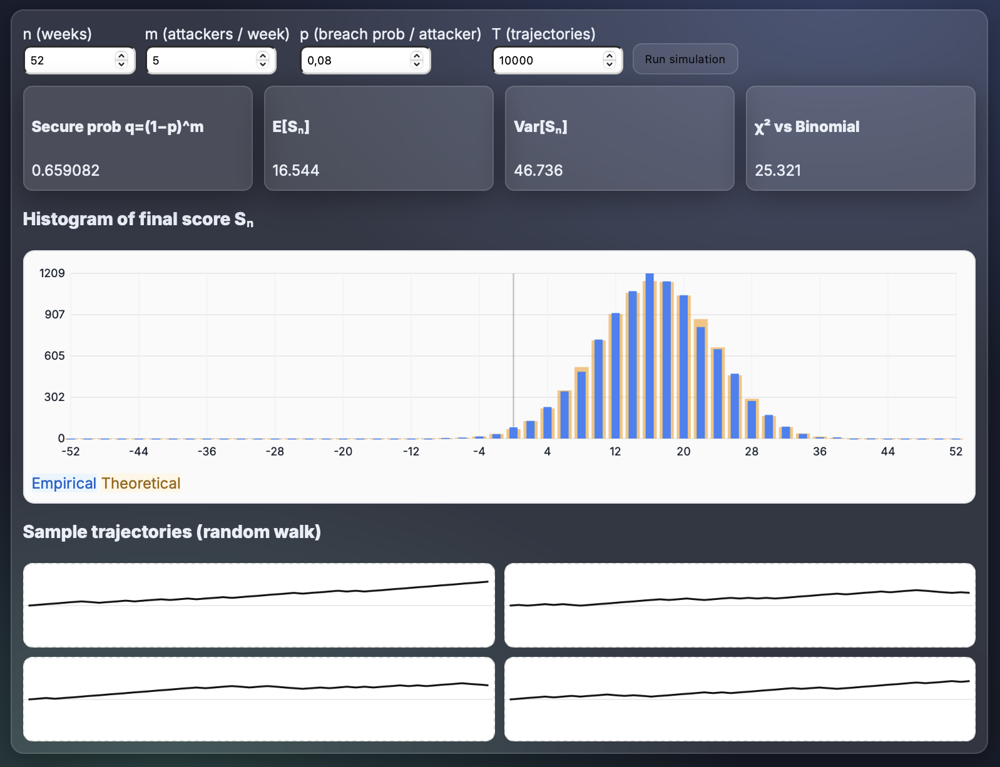
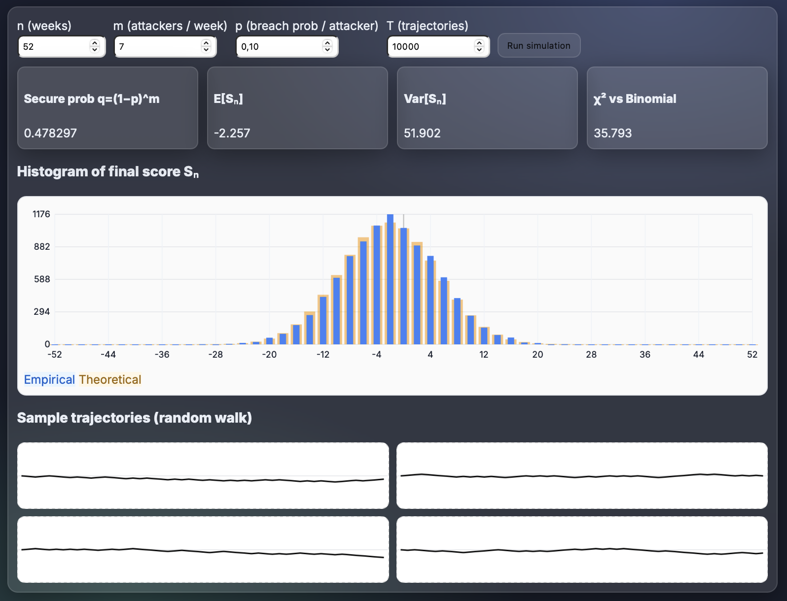
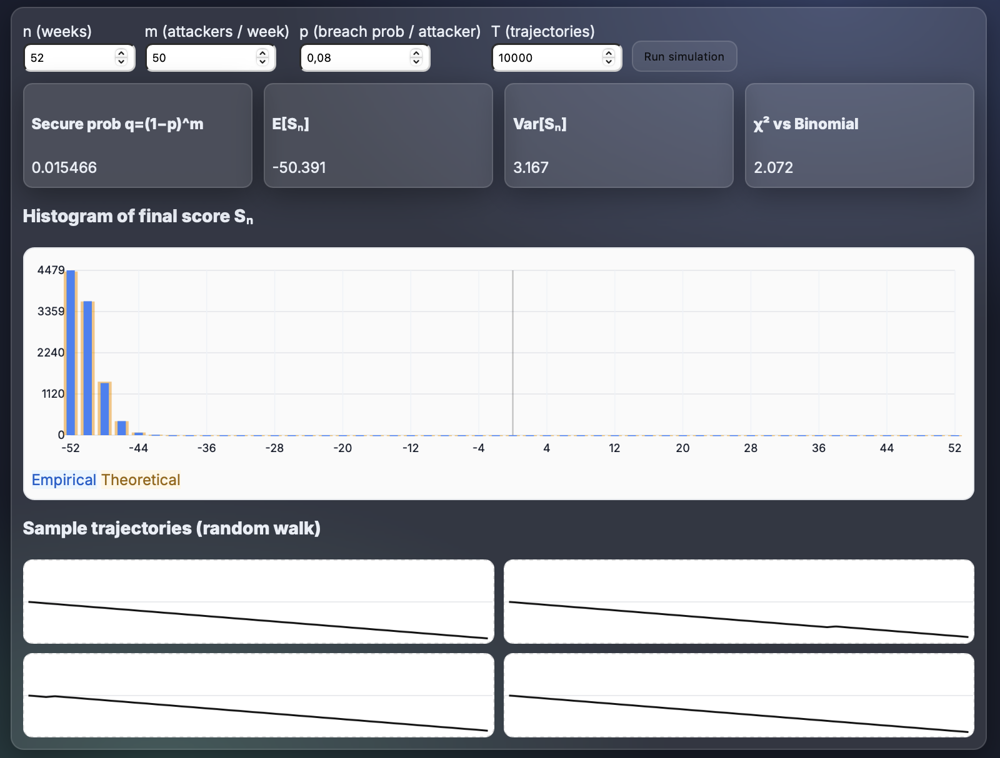
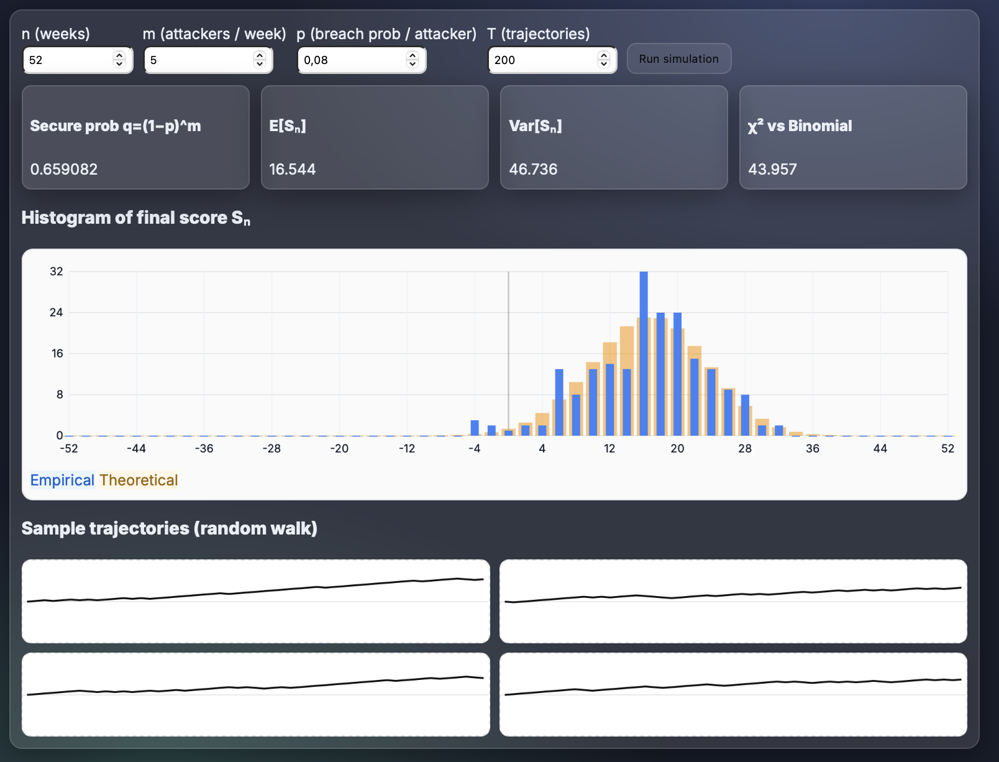
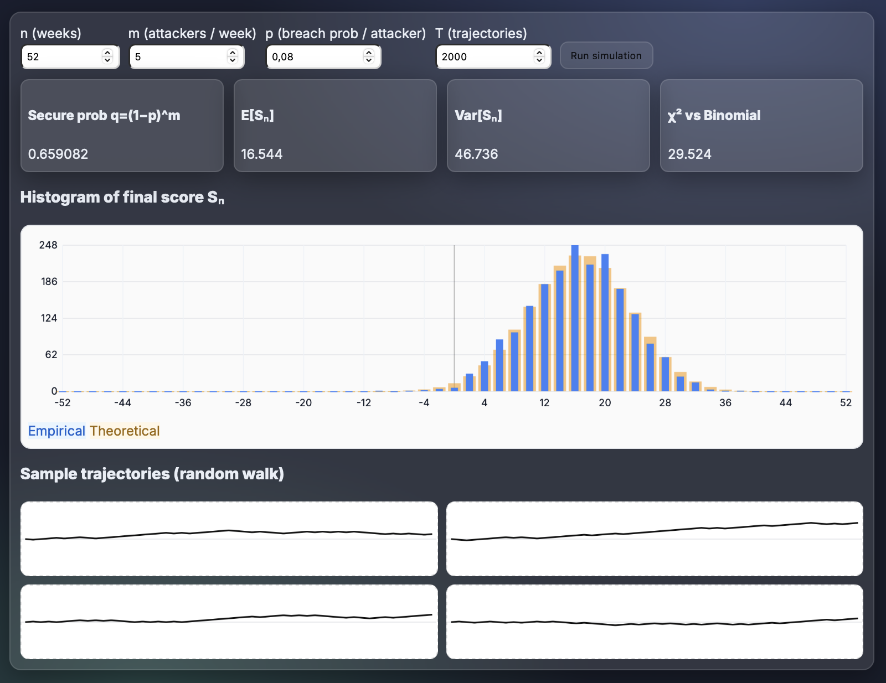
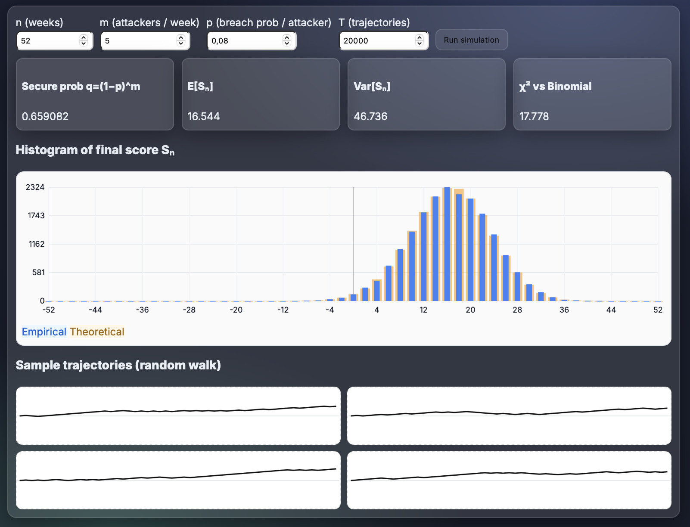

Random Walk of Server Security & Convergence to the Binomial
Goal
I model weekly server security as a random walk with +1 for a secure week and −1 for a breached week.
With m independent attackers each with breach probability p, a week is secure with probability
q = (1 − p)^m. I simulate many trajectories over n weeks, build the empirical distribution
of the final score Sₙ, and compare it with the theoretical Binomial model.
Theory
- Weekly outcomes. Secure iff nobody breaches: P(Secure)=q=(1−p)^m and P(Breach)=1−q.
- Random walk mapping. Let Xₜ∈{+1,−1}. If K weeks are secure, then Sₙ=∑Xₜ=2K−n.
- Distribution. K~Binomial(n,q) ⇒ P(Sₙ=2k−n)=C(n,k) q^k (1−q)^{n−k}, k=0..n.
- Moments. E[Sₙ]=n(2q−1), Var[Sₙ]=4nq(1−q).
Interactive Experiment (JS)
Secure prob q=(1−p)^m
E[Sₙ]
Var[Sₙ]
χ² vs Binomial
Histogram of final score Sₙ
Sample trajectories (random walk)
Method (summary)
- Compute q=(1−p)^m.
- Simulate T trajectories of length n with steps +1 (prob q) or −1 (prob 1−q).
- Build the histogram of Sₙ over the support {−n,−n+2,…,+n}.
- Overlay theoretical counts from K~Binomial(n,q) mapped via Sₙ=2K−n.
- Report χ² (empirical vs expected) as a goodness-of-fit index.
Observations
- For fixed p, increasing m decreases q=(1−p)^m, shifting the distribution of Sₙ left (more breaches → more −1 steps).
- As the number of trajectories T grows, empirical bars approach the Binomial prediction and χ² decreases.
- For large n, the shape of Sₙ becomes approximately normal, with mean n(2q−1) and variance 4nq(1−q) (CLT).
Experimental Results
Test A — Baseline (n=52, m=5, p=0.08, T=10000)
Measured: q=0.659082, E[Sₙ]=16.544, Var[Sₙ]=46.736, χ²=25.321. Expected (theory): q≈0.6591, E[Sₙ]≈16.54, Var[Sₙ]≈46.74.

Commentary. With q≈0.659, secure weeks dominate. The random walk drifts upward giving E[Sₙ]≈+16.5. Empirical and theoretical bars are tightly aligned (low χ²), which illustrates that the final score distribution is exactly the Binomial reparametrized via Sₙ=2K−n.
Test B — Near-symmetric (q≈0.5, n=52, m=7, p=0.10, T=10000)
Measured: q=0.478297, E[Sₙ]=−2.257, Var[Sₙ]=51.902, χ²=35.793. Expected (theory): q≈0.4783, E[Sₙ]≈−2.26, Var[Sₙ]≈51.90.

Commentary. Choosing m=7, p=0.10 makes q≈0.478, close to one half. The walk has almost no drift and the histogram is centered near zero (E[Sₙ]≈−2.26). Variance matches theory and the slight left shift is consistent with q<0.5.
Test C — Many attackers (n=52, m=50, p=0.08, T=10000)
Measured: q=0.015466, E[Sₙ]=−50.391, Var[Sₙ]=3.167, χ²=2.072. Expected (theory): q≈0.0155, E[Sₙ]≈−50.39, Var[Sₙ]≈3.17.

Commentary. With m=50 attackers and p=0.08, a secure week is extremely rare (q≈0.0155). The random walk almost always steps −1, so Sₙ concentrates near −n. The very small variance and tiny χ² reflect the near-degenerate Binomial.
Test D — Convergence as T grows (n=52, m=5, p=0.08)
Varying T demonstrates how sampling noise decreases and empirical frequencies converge toward the theoretical Binomial.
- T = 200 → χ² = 43.957
- T = 2000 → χ² = 29.524
- T = 20000 → χ² = 17.778



Commentary. Holding parameters fixed while increasing T reduces sampling noise. The empirical histogram becomes smoother and χ² drops from 43.96 → 29.52 → 17.78, illustrating convergence to the Binomial law.
Discussion
- The simulations confirm that the cumulative server score Sₙ behaves as a random walk driven by a Binomial process, perfectly matching theoretical expectations.
- Increasing m (number of attackers) sharply decreases q, shifting the distribution left and showing that breaches dominate.
- When q ≈ 0.5, the walk becomes symmetric and fluctuates equally above and below zero.
- As T increases, sampling noise vanishes and χ² decreases, illustrating empirical convergence to the Binomial law.
- For large n, the shape of Sₙ tends toward a bell curve, consistent with the Central Limit Theorem.
References
- Random Walk — Wikipedia
- Binomial Distribution — Wikipedia
- Chi-Square Test — Wikipedia
- Central Limit Theorem — Wikipedia